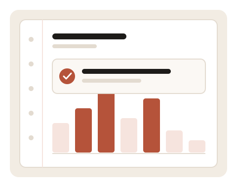

A learning tracker that fits on one page
Write down what you studied.
Watch the weeks add up.
StudyLog is a small tool I built while learning front-end development. Log a session, tag it with a subject, set a weekly hour goal, and the page works out your totals, your streak and where your time actually went. Everything is stored in your own browser.

This week at a glance
Figures update the moment you add or remove a session.
Hours per day
Add a session
Your log
Nothing logged yet. Add your first session on the left, or load the sample data to see how it looks.
Weekly goals
Set an hour target per subject. Progress fills as you log sessions this week.
No goals set yet. Try “JavaScript” at 5 hours a week.
About this project
Why I built it
I kept losing track of how much time I was actually putting into studying. A notebook worked until I wanted totals, so this became my front-end module project.
What it uses
Plain HTML, CSS and JavaScript. No frameworks and no build step. Layout is CSS Grid for the page structure and Flexbox for the smaller pieces.
Where the data lives
In your browser’s localStorage. Nothing is uploaded anywhere, so clearing your browser data clears the log too.
Does my data sync between devices?
No. Everything stays in the browser you used. Adding accounts and a server would be a back-end job, which is a different module.
How is the streak counted?
Consecutive days with at least one logged session, counting back from today. Miss a day and it resets to zero.
Which week does the dashboard use?
The current Monday-to-Sunday week, based on your computer’s date.
Can I use this myself?
Yes. Clone the repository, open the folder and start logging. There is nothing to install.